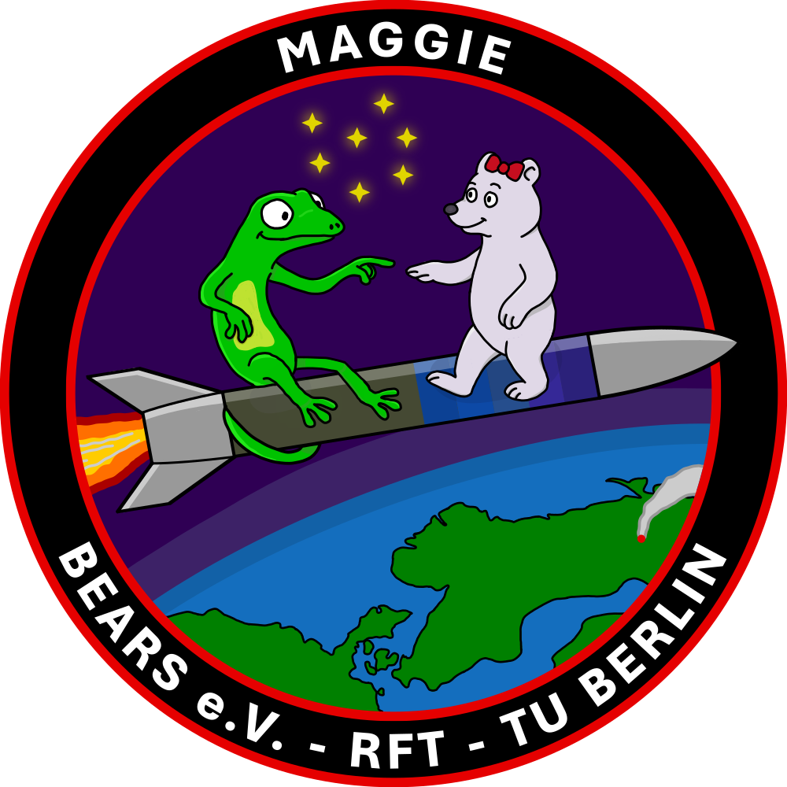
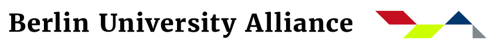
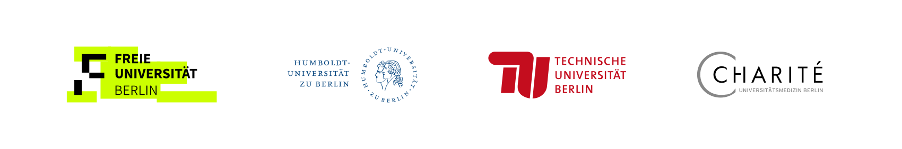

MAGGIE
MAGGIE stands for Microgravitational Automated Gecko Gripping Interaction Experiment and will research on gecko materials and robotic sciences in a reduced gravity environment and under the influence of space environment. The project is starting by October 2025 and will apply for the REXUS-program.

News
10.12.2025: MAGGIE was accepted to the 17th REXUS cycle and is looking forward the Preliminary Design Review and Student Training Week in January at Esrange / Sweden.
25.11.2025: With three motivated students, MAGGIE took part in the selection workshop at the DLR for the 17th cycle of the REXUS programme. We are eagerly awaiting the results to see if we will be participating further.
30.10.2025: MAGGIE recieved to invitation letter to the REXUS selection workshop at the DLR in Bonn. We are looking forward an inspering dialogue and exchange with the experts from DLR and ESA as well as meeting the other student teams.
Abstract
The student research project MAGGIE is investigating the robotic removal of space debris using gecko inspired adhesive materials in microgravity. The aim is to demonstrate the functionality of the robotic arm and to test the interaction of gecko inspired adhesive materials with a smooth surface as fused silica in microgravity and space environment. The arm, equipped with a gecko inspired adhesive endeffector, should be able to manipulate or repair uncooperative space objects from a CubeSat platform. Through interaction, repairs and on-orbit servicing as well as orbit manipulation can be carried out, making space travel significantly more sustainable. When conducting the experiment during a launch on a REXUS sounding rocket, the robotic arm will navigate to targets in a microgravity and space environment. The adhesive force of the gecko inspired adhesive materials on the surface is measured and the position of the material on the surface is recorded using cameras. The robotic arm itself consists of seven identical links in order to achieve redundancy of the individual joints.
Events and Reviews
REXUS Selection Workshop - 24. and 25. November 2025

From left to right: Felix Schoetzau, Johanna Teuchert, Leo Scheuermann, Tom Pruggmayer, Aida Zarifian, Diego Baez
Following the invitation to the selection workshop for the REXUS programme, the MAGGIE team travelled to Bonn at the end of November together with the BEXUS team DOPAMINS from BEARS to defend their project concept to experts from DLR, ESA, SSC, MORABA, and ZARM. The other REXUS/BEXUS teams also introduced themselves, and current problems with the developments as well as outstanding questions, were clarified in a constructive and appreciative environment. Feedback is still pending to clarify which teams will be part of REXUS/BEXUS going forward and will be allowed to travel to Kiruna, Sweden, at the end of January for the Preliminary Design Review and Training Week.
How to get involved
If you are interested, feel free to contact Leo Scheuermann or Felix Schoetzau or maggie(@)bears-space.de. MAGGIE is looking for all kind of skills or fields of interests. To mention some:
- Systems and Requirement Engineering
- Design and CAD
- Computer Sciences
- Electrical Engineering
- Test Execution
- Manufacturing
- Outreach / Communication
- Budgeting
- Management
The Kick-Off event is on 21st October 2025 – 2-4pm c.T. at MAR 0.017 We look forward to your participation.
You can expect unique Hands-On experience in a space related research topic, you get in touch with experts from ESA and DLR and several funded travels to European space research institutions.
About the X-Tutorials
MAGGIE is part of the Student Research Opportunities Program (StuROPx) and funded by the Federal Ministry of Education and Research (BMBF) and the state of Berlin under the Excellence Strategy of the Federal Government and the Länder. Therefore, MAGGIE will be offered as a X-Tutorial lecture compensated with 6 ECTS in both winter and summer semester. More informations about the X-Tutorials on the BUA-Website.
In the upcoming wintersemester and the following summer semester the project can be offered as a lecture worth 6 ETCS. Check out more informations in the moodle website.
 
About the REXUS competition
MAGGIE is applying for Cycle REXUS17 of the REXUS/BEXUS programme. A positive feedback and admission to the programme will guarantee MAGGIE with scientific, technical and financial support and unique travel opportunities within the Cycle to different reviews. The Highlight shall be marked by the launch on a sounding rocket from Kiruna / Sweden in March 2027.
The REXUS/BEXUS programme is realised under a bilateral Agency Agreement between the German Aerospace Center (DLR) and the Swedish National Space Agency (SNSA). The Swedish share of the payload has been made available to students from other European countries through a collaboration with the European Space Agency (ESA). EuroLaunch, a cooperation between the Swedish Space Corporation (SSC) and the Mobile Rocket Base (MORABA) of DLR, is responsible for the campaign management and operations of the launch vehicles. Experts from DLR, SSC, ZARM and ESA provide technical support to the student teams throughout the project. REXUS and BEXUS are launched from SSC, Esrange Space Center in northern Sweden.
Older News
21.10.2025: The Kick-Off event for the X-Tutorial MAGGIE is on Tuesday (21st October 2025) from 2 to 4 pm c.T. at MAR 0.017!
22.08.2025: MAGGIE hands in its letter of intend for the upcoming REXUS-cycle.
30.07.2025: The project was accepted as a X-Tutorial and thereby can be offered as a lecture in the upcoming winter semester.
01.06.2025: MAGGIE has applied for the X-Tutorial program by StuROPx.
Contact
We are always happy about interested students for MAGGIE and the club. You can contact us at maggie(@)bears-space.de and find regular updates on the Instagram channel @bears.space. The best way to reach us is to come to the weekly Bears meeting every Tuesday at 6pm in F11.